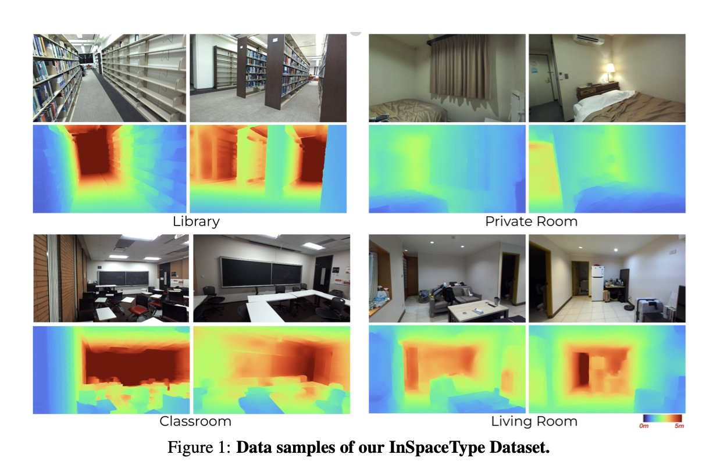
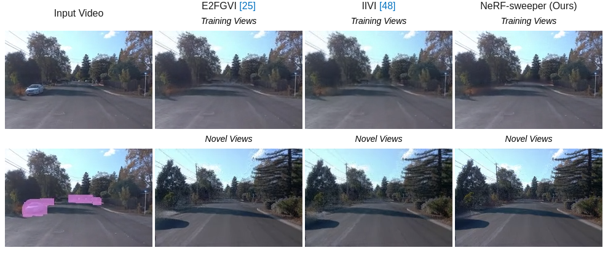
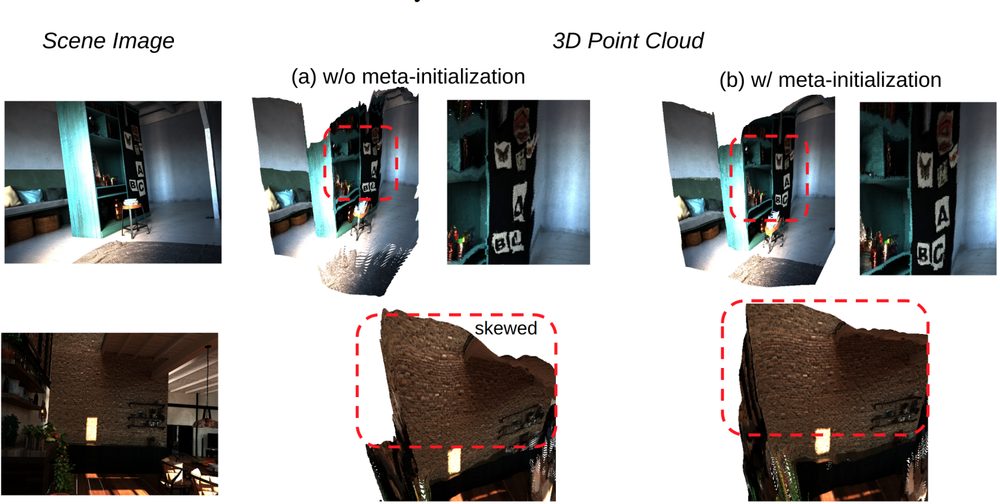
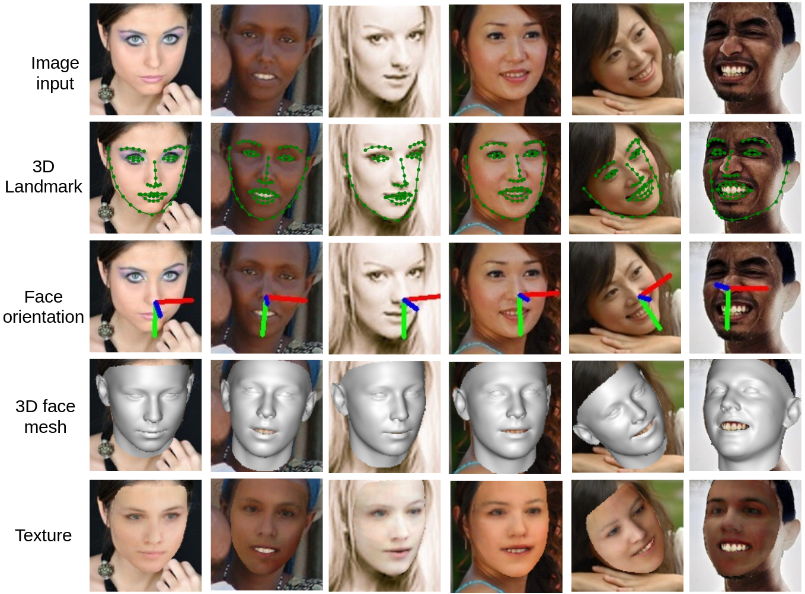
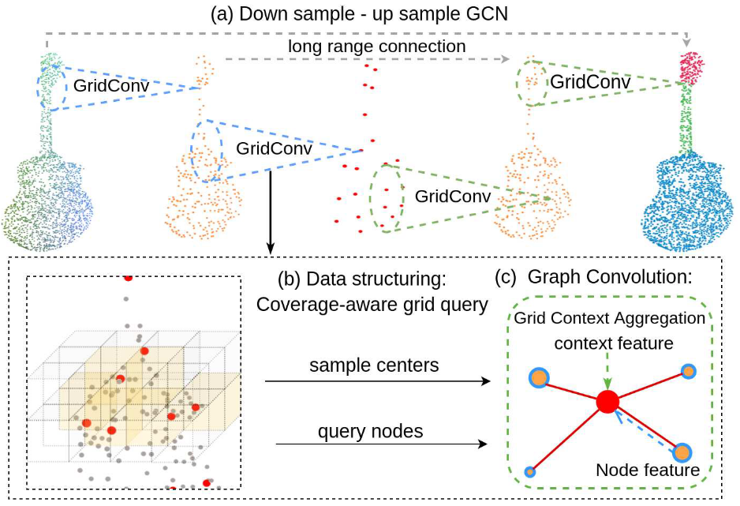
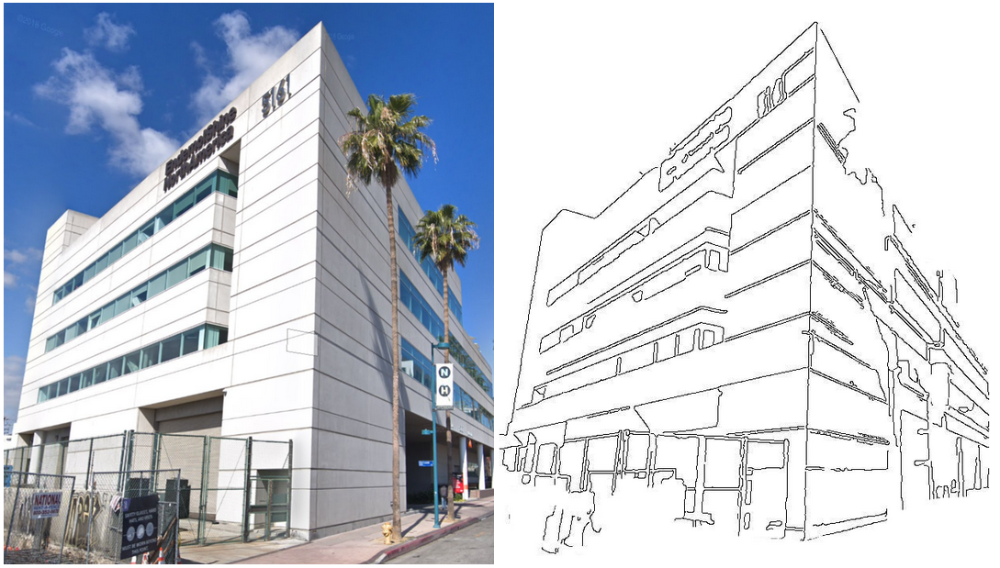
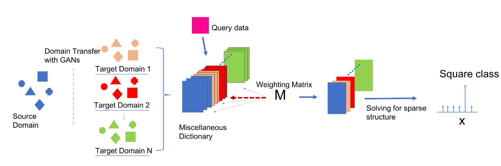
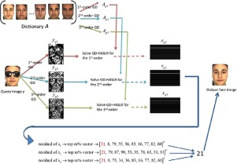
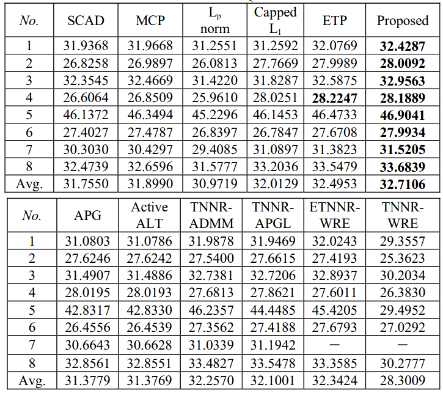
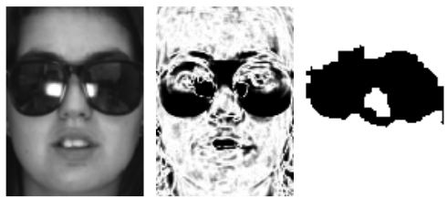

Cho-Ying WuPh.D.
Rm 108, Powell Hall, |
|
Currently working at Google Pixel Team for computational photography! Internship: Argo AI, 2019 Amazon, 2020 Facebook, 2021 NVIDIA Toronto AI Lab, 2022
I am a fifth-year Ph.D candidate at CS Department of Univeristy of Southern California working with Prof. Ulrich Neumann . Before that, I obtained my MS degree in Graduate Institute of Communication and Engineering at National Taiwan University. I earned a double major degree from National Taiwan University for Electrial Engineering and Law.
I also passed the Attorney of Higher Examination in Taiwan in 2016. This is equalivent to the bar exam in the United States.
My research interests are 3D Vision, NeRF, Generation and Inpainting in 3D, Depth Sensing, 3D Face Modeling.


Publications
|  | InSpaceType: Reconsider Space Type in Indoor Monocular Depth Estimation Cho-Ying Wu, Quankai Gao, Chin-Cheng Hsu, Te-Lin Wu, Jing-Wen Chen, Ulrich Neumann Conference on Robot Learning (CoRL) OOD Workshop, 2023 [paper] [project page] [code] [data] This work introduces a dataset and benchmark that reconsiders an important but usually overlooked factor- space type. We detailedly analyze ten SOTA models and four popular training dataset and unveil their potential biases. See our project page to download the datasets! |
|  | NeRF-sweeper: Inpainting NeRF Road Scenes using 2D Diffusion Riccardo de Lutio, Cho-Ying Wu, Huan Ling, Alperen Degirmenci, Janick Martinez Esturo, Sanja Fidler, Or Litany, Zan Gojcic Intern Project and Under Patent, 2023 |
|  | Meta-Optimization for Higher Model Generalizability in Single-Image Depth Prediction Cho-Ying Wu, Yiqi Zhong, Junying Wang, Ulrich Neumann IROS 2024 CVPR 2023 Workshop Adversarial Machine Learning on Computer Vision CVPR 2023 Workshop Computer Vision for Mixed Reality [long version paper] This work studies learning scheme perspective for popular monocular depth estimation. We formulate our meta-learning based method by novel fine-grained task concept to address less affinity issue in single images. We show performance gain by simply changing learning scheme. |

|
Toward Practical Monocular Indoor Depth Estimation Cho-Ying Wu, Jialiang Wang, Michael Hall, Ulrich Neumann, Shuochen Su IEEE Conference on Computer Vision and Pattern Recognition (CVPR), 2022 [paper] [project page] [code] [data] [video] [poster] Practical indoor depth estimation: without depth annotation, efficient training data collection, high generalizability, and accurate and real-time depth sensing. See our project page to download the largest datasets for indoor stereo! |

|
Cross-Modal Perceptionist: Can Face Geometry be Gleaned from Voices? Cho-Ying Wu, Chin-Cheng Hsu, Ulrich Neumann IEEE Conference on Computer Vision and Pattern Recognition (CVPR), 2022 [paper] [code] [project page] [video] [poster] An anlaysis on the statistical correlation between voices and 3D faces. Unlike previous work using 2D representations that include background or hairstyle variations, our 3D approach better validate correlation between voices and geometry. See our project page for explanation of correlation between face geometry and voice! |
|  | Synergy between 3DMM and 3D Landmarks for Accurate 3D Facial Geometry Cho-Ying Wu, Qiangeng Xu, Ulrich Neumann IEEE International Conference on 3D vision (3DV), 2021 [paper] [code] [project page] [video] [poster] This work attains the state of the art on 3D facial geometry prediction, including 3D facial alignment, face orientation estimation, and 3D face modeling. Check our code for the SOTA performance 3D facial alignment and face pose estimation! |

|
Scene Completeness-Aware Lidar Depth Completion for Driving Scenario Cho-Ying Wu, Ulrich Neumann IEEE International Conference on Acoustics, Speech, & Signal Processing (ICASSP), 2021 [paper] [code] [project page] [1-min demo] [long version video] [poster] [slides] This work is the first to attend scene-completeness issue of depth completion. We obtain both structured and accurate scene depth. |

|
Geometry-Aware Instance Segmentation with Disparity Maps Cho-Ying Wu, Xiaoyan Hu, Michael Happold, Qiangeng Xu, Ulrich Neumann IEEE Conference on Computer Vision and Pattern Recognition Workshop Scalability in Autonomous Driving (CVPRw), 2020 [paper] [project page] [code] [video] The first outdoor instacne segmentation that using disparity maps. Based on Mask-RCNN, we show that using multi-modality of geometric information can improve the performance. |
|  | Grid-GCN for Fast and Scalable Point Cloud Learning Qiangeng Xu, Xudong Sun, Cho-Ying Wu, Panqu Wang, Ulrich Neumann IEEE Conference on Computer Vision and Pattern Recognition (CVPR), 2020 [paper] [code] |

|
Deep RGB-D Canonical Correlation Analysis for Sparse Depth Completion Cho-Ying Wu*, Yiqi Zhong*, Suya You, Ulrich Neumann (*Equal Contribution) Neural Information Processing System (NeurIPS), 2019 [paper] [code] [Youtube video] [poster] We study deep canonical correlation analysis for multi-modal fusion on depth completion and attain the SOTA performance when only few sparse measurements are available. |
|  | Salient Building Outline Enhancement and Extraction Using Iterative L0 Smoothing and Line Enhancing Cho-Ying Wu, Ulrich Neumann IEEE International Conference on Image Processing (ICIP), 2019 [paper] [code] [groundtruth dataset] [additional results] Using iterative operation of L0-smoothing and enhancing, we can extract robust outlines for buildings. |
|  | Efficient Multi-Domain Dictionary Learning with GANs Cho-Ying Wu, Ulrich Neumann IEEE Global Signal and Information Processing, (GlobalSIP), 2019 (Oral) [paper] This work learns multi-domain dictionary from GANs that improve the robustness of dictionary learning. |
|  | Occluded Face Recognition Using Low-rank Regression with Generalized Gradient Direction Cho-Ying Wu, Jian Jiun Ding Pattern Recognition (PR), vol. 80, pp. 256–268, 2018 [paper] [code] A robust and efficient occluded face recognition framework that attains the SOTA, using the sparse and low-rank model. |
|  | A Fast Non-convex And Non-smooth Regularizer For Low Rank Matrix Completion Cho-Ying Wu, Jian-Jiun Ding Asia-Pacific Signal and Information Processing Association Annual Summit and Conference (APSIPA-ASC), 2017. [paper] |
|  | Occlusion Pattern-based Dictionary For Robust Face Recognition Cho-Ying Wu, Jian-Jiun Ding IEEE International Conference on Multimedia & Expo (ICME), 2016. [paper] |
Academic Activities
-
Reviewer
Journal: IEEE Access, Pattern Recognition Letters, Neural Computing
Conference: ICIP 2019-2023, CVPR 2022-2024 ECCV 2022-2024, AAAI 2022-2023, NeurIPS 2023, ICCV 2023, ICLR 2024, ICML 2024, ACCV 2024
-
Teaching Assistant
Computer Graphics, University of Southern California, Fall 2022
Database Systems, University of Southern California, Spring 2022
Computer Graphics, University of Southern California, Fall 2021
Database Systems, University of Southern California, Spring 2021
Computer Graphics, University of Southern California, Fall 2020
Database Systems, University of Southern California, Spring 2020
Computer Graphics, University of Southern California, Fall 2019
Data Structures and Object Oriented Design, University of Southern California, Spring 2019
Advanced Digital Signal Processing, National Taiwan University, Spring 2017
Differential Equation, National Taiwan University, Fall 2016